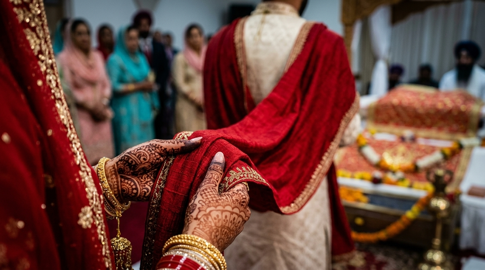

Traditional Punjabi Weddings 101
The Sacred Anand Karaj Ceremony
By Sukhman Sandhu
Understanding the Anand Karaj
The Anand Karaj ("Blissful Union") is the sacred Sikh marriage ceremony. Held in a Gurdwara, the couple walks clockwise around the holy scripture (Guru Granth Sahib Ji) during four sacred hymns known as the Laavan. Watch the documentary video below for a step-by-step breakdown:
Interactive Fact & Image Reveal
Click any card below to reveal a historical photo and tradition fact from the Anand Karaj:

Fact: No verbal "I do" vows are spoken. The physical act of circumambulating clockwise around the holy scripture during the singing of the four Laavan serves as the couple's solemn vow.

Fact: The groom's woven shawl (Palla) is placed into the bride's hand by her father, symbolizing her transition into a shared spiritual and household journey with her husband.

Fact: All guests sit on carpeted floor level in front of the holy scripture to symbolize complete spiritual and social equality, regardless of wealth or status.